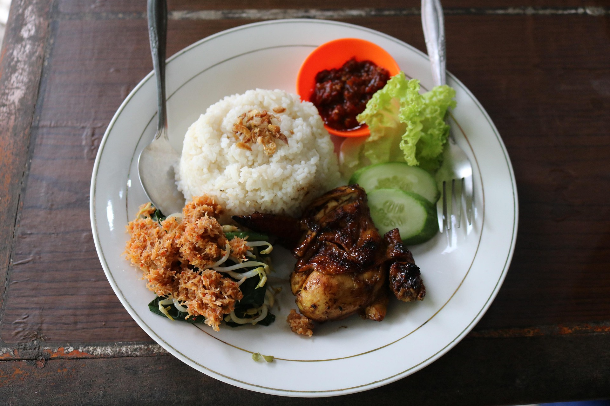

Descarga material educativo y encuentra guías de transporte para moverte por todo el Perú.
FERNANDINI ES MÁS QUE UN RESTAURANTE, SOMOS UN ESPACIO CULTURAL.
GANADORES ⭐A MEJOR POLLERIA⭐-- DE LOS PREMIOS SOMOS--
La Mar es un restaurante de comida peruana especializado en ceviches y mariscos.